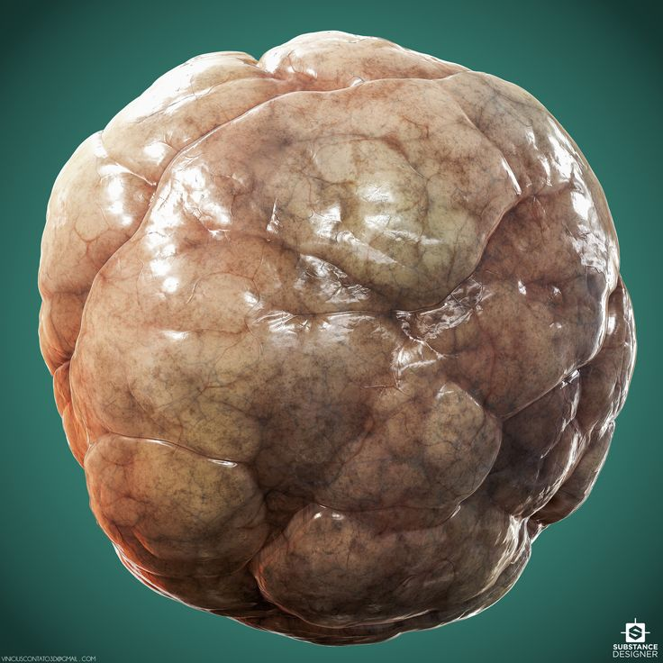
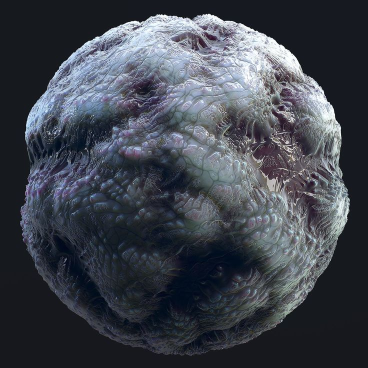
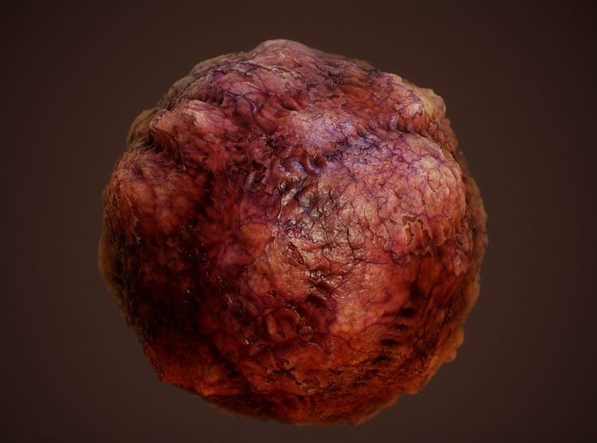
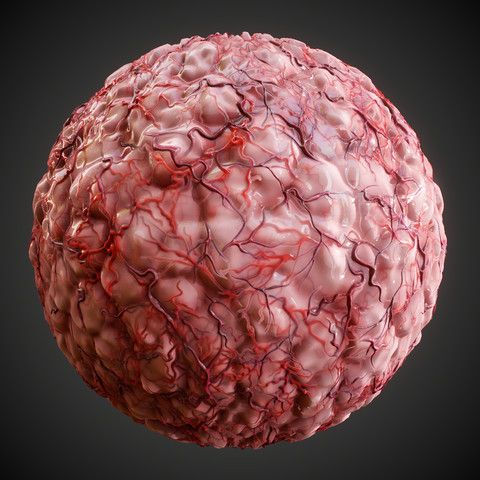
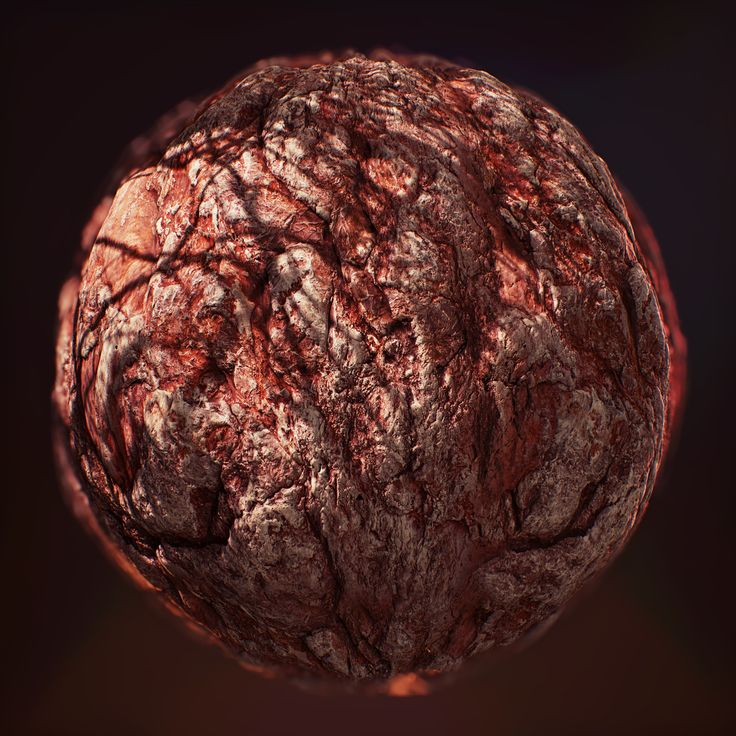
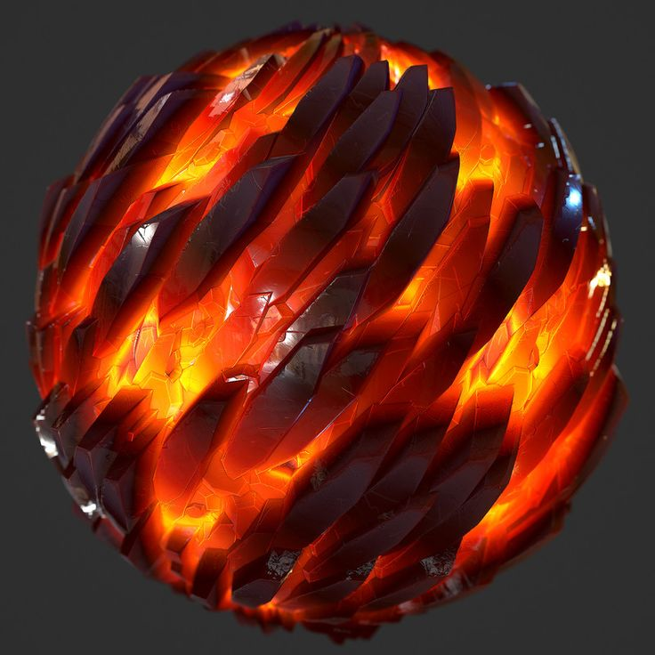
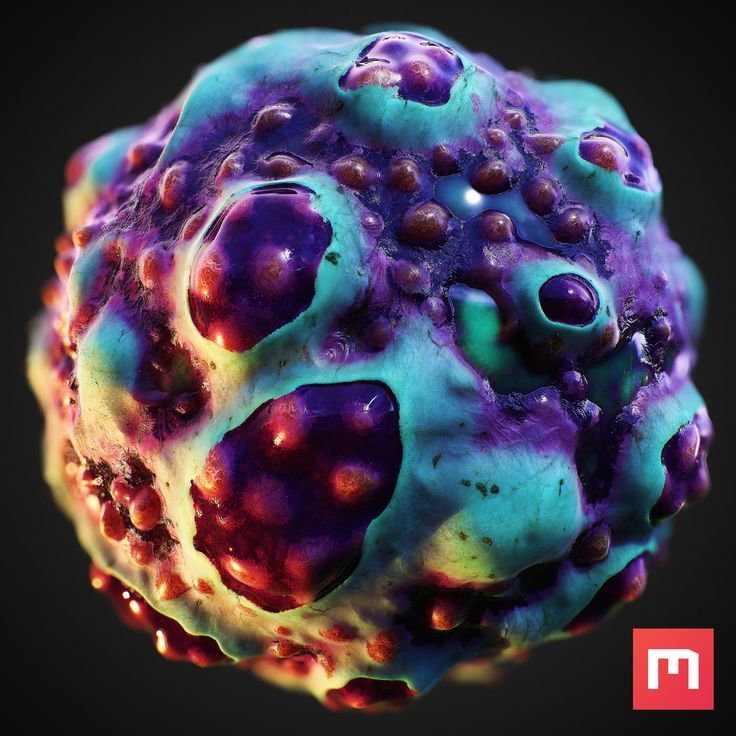
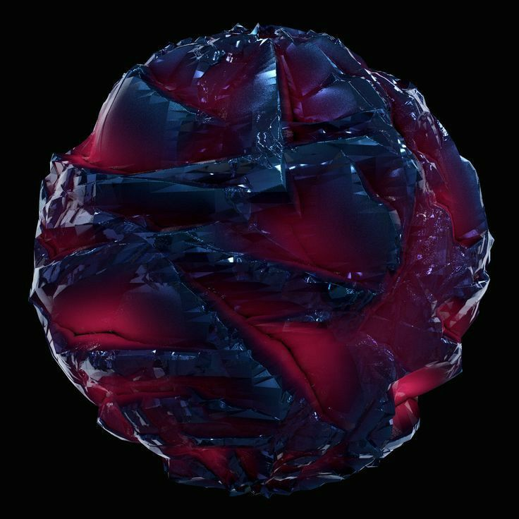
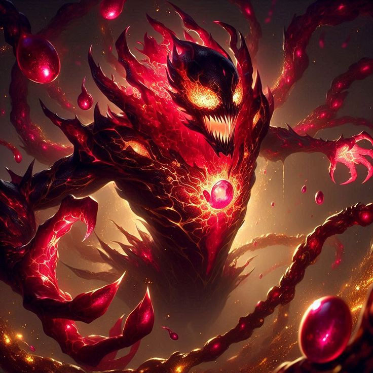

Skin Swoll: "Skin Swoll is a debilitating disease that causes the afflicted to lose physical defense at an alarming rate. After every battle, the victim's physical defense is reduced by a further 10 points, making them increasingly vulnerable to enemy attacks. What's worse, the loss in defense cannot be recovered simply by resting or meditating. The only way to regain normal physical defense is to find a cure for the dreaded Skin Swoll, which can only be found through rare and dangerous means."
Withering Plague: "Withering Plague is a deadly disease that afflicts the infected with a slow and painful demise. Every time the afflicted target takes any action, they take damage equal to 10% of their total HP. This damage is permanent and cannot be recovered by resting or healing magic. The only way to escape the horrific effects of Withering Plague is to find a rare and elusive cure.""

Crimson Rot: "Crimson Rot is a powerful disease that enhances the affected target's physical strength by 10 points with each passing turn. However, this incredible buff comes at a steep price: every physical attack they land will now cause the user to suffer a damage equal to 10% of their current health. As if that wasn't bad enough, the PHY STR buff and the percentage of damage taken from recoil will both stack with each turn, making the effects of Crimson Rot increasingly deadly the longer it festers."

Bloodblister Rash: Bloodblister Rash is an insidious disease that afflicts the victim with a flesh-like orb on their back, which feeds off 5% of their total MP points each turn. This sinister growth absorbs the victim's magic power, gradually depleting their MP bar, and increasing in size as it does so. Once the victim's MP is completely drained, the orb will explode, dealing 15% of their maximum HP as damage. To make matters worse, the lost MP cannot be regained until the Bloodblister Rash has been removed.

Blood Thickening: "Blood Thickening is a unique disease that both blesses and curses its victim. On one hand, the target's physical defense is doubled each turn, offering them increased protection against enemy attacks. However, this enhanced defense comes at a steep price. Their physical strength is also reduced by the same amount with each passing turn, leaving them slower and weaker in their attacks. To add insult to injury, the victim will also find that every action they perform now takes twice as long as it normally would."

Heartfire: "Heartfire is a powerful and dangerous disease that both enhances the damage from any burning effect the target has and removes their resistance and immunity to fire damage. On the other hand, it prevents the target from being affected by the Wet status and grants them immunity to water-elemental attacks. However, all fire-based attacks will deal twice the normal damage to the cursed target. The only way to temporarily lift the effects of the Heartfire Curse is by getting hit by a water-elemental attack."

Sightless Bane: "Sightless Bane is an insidious disease that gradually weakens the afflicted target's accuracy by 2 points each turn, making their attacks less and less likely to hit as time goes on. A spinning wheel will be displayed on the screen, showing the odds of the target's attacks landing. For example, if their accuracy has decreased by 2, there'll be a 2% chance of them missing. The only way to lift this dire curse is by using healing skills or items."

Death Pulse: "Death Pulse is a terrifying disease that bestows a fatal curse on the afflicted target, causing them to undergo an instant, unavoidable death on a predetermined date. Luckily, the effects of Death Pulse can be resisted by having Instant Death Resistance or Instant Death Immunity. Without these defenses, the cursed target's fate is sealed."

Carnage Rage: "Carnage Rage is an extreme transformation curse that turns the afflicted target into a fearsome monstrosity. All their magic-related attributes, such as MG DEF and MG STR, are erased, while their PHY STR and PHY DEF stats skyrocket to their maximum potential. Additionally, the transformed target loses their original skills and abilities, instead gaining terrifying physical attacks. However, this monstrous transformation comes at a price, as the target takes 5% of their total HP in damage each turn. Worse still, the HP lost in this way cannot be regained."
